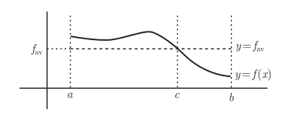
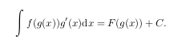
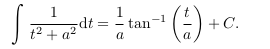

本文是微积分复习的第二篇，教材使用《普林斯顿微积分读本》，涵盖第15章-第21章的内容。
- 函数与微分
- 积分 <=
- 级数
- 其他
积分定义
简介
积分是从级数求和引入的，比如第一例子：
这种引入方式即暗示积分的求（有向）面积，求位移做铺垫，也为后边级数做准备。
伸缩级数
比较有趣的一个例子:
书中用伸缩级数的方法，推导出了平方和级数的和公式：
将等式左侧整理后得到
有向面积
这一段主要从直观上看级数到积分的一个过度
定积分
定积分定义（黎曼和）
定积分是一种定义，是一种求某段[a,b]曲线y=f(x)，与X轴形成闭合图形的面积。可以看出，定积分面向的是一个具体的问题，然后再次抽象之后才出现了不定积分。
这个图形面积的求法，就需要借鉴上一节有向面积。将上一节的公式区间长度趋向于0,就是这个图像的面积，也就是积分。
上一节的求和部分，也别称作黎曼和。
积分的定义也离不开极限。这里发散一下，这个叫黎曼和，也就与黎曼有关，而黎曼是19世纪人物，微积分是17世纪创立的，也就是这个定义，是很久之后才确定的。
定积分性质
有了定义，就有了几个简单的性质：

对这几个性质只说一点：在矩阵中，我们说线性变换符合两个公式：
T(v+w) = T(v) + T(w); T(cv) = cT(v)。如果把f(x)看作v，g(x)看作w，那积分就可以看作成一种线性变换了。
估算积分
积分既然可以看作成一种面积，面积就有大小之分
这样就看出，积分是在[m(b-a), M(b-a)]之间
积分中值定理
有了最大值与最小值，也就想到平均值。

f(c)就可以看作是f(x)在区间[a,b]上的平均值。
微积分基本定理
注意，这里说的是微积分基本定理，将积分与微分联合到一起的定理。主要有2个基本定理，一个阐述积分与微分之间的关系，从这里引出了不定积分，另一是积分函数与被积函数的关系，从而引出了不定积分的计算方法。
第一基本定理

这里看出，微积分基本定理是与定积分相关的定理，也就是包含积分的上下限，以后的很多文章都是在上下限中做的。
其证明源自:
对比不定积分与导数：
第二基本定理
微积分第二基本定理的证明书中没有画图，画图的话会很简单，就是阴影部分面积的减法运算。
证明:
函数到a部分的面积是F(a)，函数到b部分的面积是F(b)，那[a,b]之间的面积自然就是F(b)-F(a)了。
积分上下限是函数
积分上限是函数：
这句话说全了是这样：求积分式的导数，如果积分上限是函数。解题时，其实是将上限设成另外一个变量，然后再隐函数求导。如：
这里需要注意，dy/du中积出的函数变量是u，后边要用x替换掉。
积分下限是函数与上限是函数相同，做一个相反数即可转换成，这里不做介绍
- 积分与导数公式
微积分基本方法1
换元法
示例1
这里设t = x3，将t导入得
(1/3)sin(x3) + C示例2
这里设t = x3 + 7x - 9
从示例2看出的公式是这样：
示例3
示例4
这里的t = ex示例5
这个与上边的例子有很大不同，这个需要一次函数的根式形式，需要将t设置成这个根式。
理论解释

这个解释其实只解释了前4个示例，第5个示例并不在此之列
分部积分法
公式
分部积分法跟贝叶斯公式有点相似
示例1
多项式与指数函数
示例2
然后以相同德办法处理等式右边第二项多项式与三角函数
示例3

利用三角函数两次求解后便会原值的特点三角函数与指数函数
示例4
以上三种都是两种基本初等函数的组合方式，ex > sin(x) > x 这种顺序
以下这些则反之，可以认为它们比 x 还小
部分积分法
部分积分法是处理，有理函数(两个多项式函数的比值)的方法. 通过一些代数运算把它分解成几个更简单的有理函数和的形式, 然后再对真写简单的有理函数求积分.
步骤
- 要确保分母的次幂大于分子的次幂,否则,通过除法方式,转换成此形式
- 对分母做因式分解
对于二次函数,查看判别式,若大于0,则可以因式分解 分部
分部是将因式分解之后的乘积形式,变成和形式的过程
这有些像基向量的样子,在每个基向量的常数倍.计算常量的值
- 求解分母为线性项次幂的积分
- 对分母是二次函数的被积函数求积分
示例1:
示例2:
示例3:
再次将进行分部,第一部分用换元法, 第二部分借用来计算
微积分基本方法2
三角恒等式的积分
通过几个三角恒等式进行变化,将不易求的积分转变成易求的积分.恒等式包括:
- 倍角公式:
- 毕达哥拉斯恒等式:
- 和差公式:
这一部分的示例太多了,而且没有统一的解法,只做几个示例:
示例1
给sec(x)上次幂,转换成2次进行
示例2
三角函数的幂积分
三角函数的幂积分,很繁琐.不同的三角函数,技巧不相同.
sinx或者cosx
如果是奇数次幂,则可以将一个奇数取出,转变积分
如果是偶数次幂,则使用倍角公式,将次幂转变成倍角tan(x)
1次幂的tan(x),转换成sinx / cosx 的形式来计算
偶次幂的tan(x)求导很有趣,使用tan(x)与secx之间的关系,能不断的降幂,每次将2幂来完成sec(x)
1次幂的secx求导很有技巧,(sec(x) + tan(x))/(sex(x) + tan(x))相乘之后,一下便可求出
偶次幂的sec(x),与偶次幂的tan(x)求法类似,但更复杂一些,不管的降幂,直到求出.其他
cot(x) 同 tan(x), csc(x) 同 sec(x)示例1
将cos(x),转变成sin(x),然后将单独的cosx 放进积分中即可.示例2
将等式右侧展看,多变成多项式形式,偶次幂继续升角,奇次幂利用换元法求解示例3
示例4
示例5
示例6
sec(x)的二次幂积分为tan(x)+c示例7
这里采用了分部积分法,并且只用来降成4次幂. 4次幂的过程仍然要继续采用此方法.总结
tan(x)与sex(x)的偶次幂,都是采用了类似数学归纳法的方式,不断降维来求解
三角换元法
三角换元法不再求解的是三角函数,而是利用三角函数的特点来求解根式的积分.
进行换元之后,脱离根式,然后进行求解.
示例1
用x = 3sin(θ)来进行换元
示例2
反常积分
反常积分要么在函数定义域内存在垂直渐进线,要么区间趋向无穷的定积分.这两种积分都涉及用极限来求积分的基本方法.在这种基本方法之上,演化出了常用的3中通用判别方法:比较判别法,极限比较判别法,p判别法,一种不太通用的判别法:绝对值判别法.这些判别法用于判断反常积分是否存在,或者称收敛.
原文中以2章的在讲述反常积分,其中,一章讲理论,一章讲示例.这里仅用一章将理论,不在积分花费更多的时间了.
2个定义
这是在下界的定义,在上界的定义同理
区间无穷的定义
比较判别法
比较判别法可以从积分的面积定义上找到源头.
如图,如果g(x)在区间[a,b]上收敛,则f(x)也一定收敛. 反命题不成立
逆反命题是如果f(x)在区间[a,b]上发散,则g(x)也一定发散.
极限比较判别法
这个有同样的意义应该理解为:有相同的收敛性. 同收敛,共发散.
如: 在x -> 0时, tan(x) ~ x, sin(x) ~ x, ex-1 ~x
p判别法
p判别法,应该是最接近运用的判别法
记忆的方法是,与y=x相比, 更接近x轴霍y轴的收敛,反之发散
绝对值判别法
其他的判别法即可判别发散,也可以判别收敛.绝对值判别法,只能用来判别收敛.
在应用上,比较适合使用在sin(x)的判别上,即sin(x) <= |sin(x)| <= 1